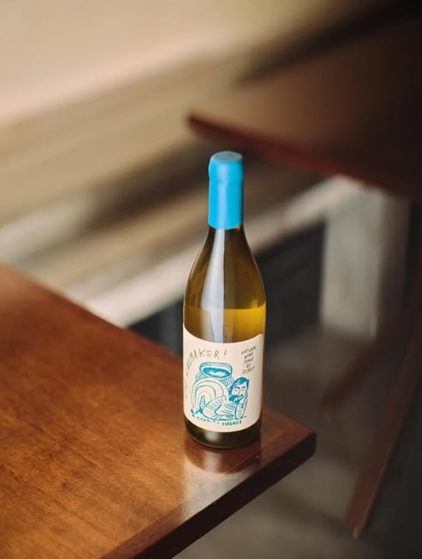
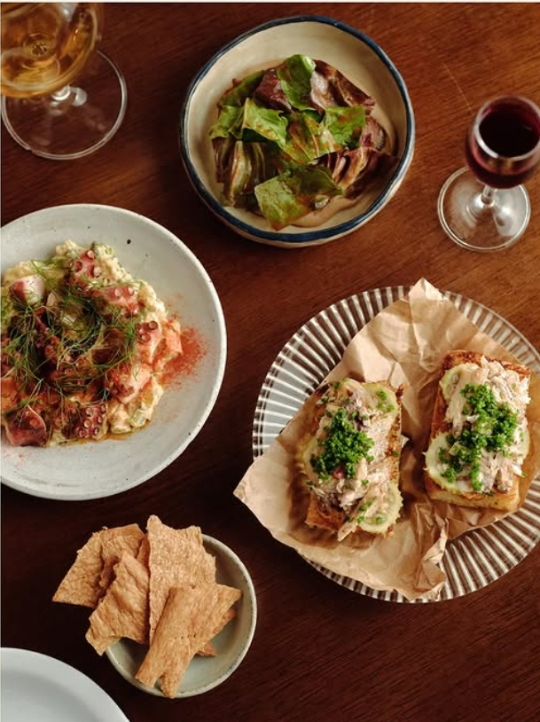
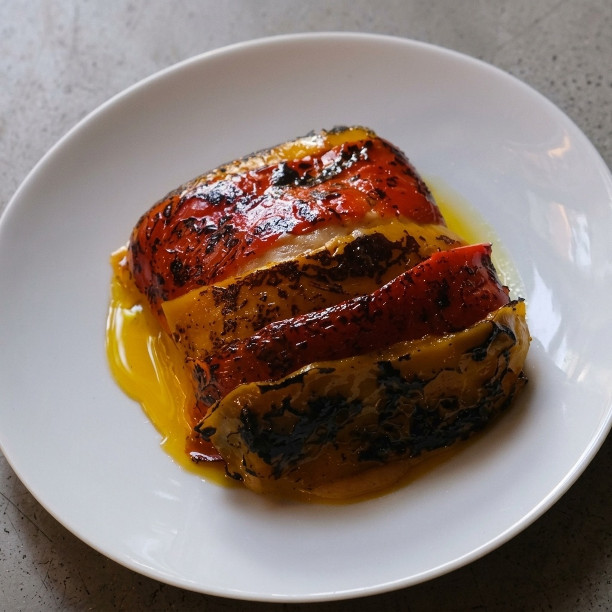

WORKAROUND TI // ARQUITETURA DE PRODUTO & IDENTIDADE
DOC: WA-BONOMI-2026-P2/4 // MOTOR DIGITAL
IDENTIDADE TÁTIL // TAPE BRUTALISM & CONTROLE OPERACIONAL
O MOTOR DIGITAL NA PALMA DA MÃO
A estética industrial da fita crepe de bancada aliada ao controle total do cardápio em tempo real pelo celular.
★ PROTOCOLO DE DESIGN: FITA CREPE TÁTIL & TIPOGRAFIA MONUMENTAL
IDENTIDADE AUTORAL DO BONOMI
Cozinhas artesanais mudam conforme a pesca fresca do dia e a colheita dos produtores parceiros. Nosso design reflete os tickets de serviço colados com fita crepe na bancada de inox, unindo alta engenharia digital à alma rústica da brasa a 800°C.
EXPERIÊNCIA
A Jornada do Cliente no Celular
01. IDENTIDADE TÁTIL (TAPE BRUTALISM)
Design exclusivo inspirado nos adesivos e fitas de bancada da cozinha. Diferenciação visual total frente a cardápios padronizados em PDF que exigem pinça de zoom.
02. A ROLETA DO CHEF RAFAEL SINKO
Mecânica tátil e interativa: com um toque, a roleta sugere criações emblemáticas e harmonizações da noite, guiando o cliente indeciso e promovendo pratos especiais.
03. TRANSPARÊNCIA DE PRODUTORES LOCAIS
Destaque para insumos da horta e fornecedores locais, valorizando o produto artesanal e a cultura gastronômica do Rio Tavares.

O ÍCONE DO TAVARES: Atum selado no fogo a 800°C com curry fresco e vagem holandesa. Apresentado com fotografia editorial e tipografia monumental.
OPERAÇÃO
A Autonomia na Palma da Mão
01. ATUALIZAÇÃO EM 10s VIA GOOGLE SHEETS
O peixe do dia mudou às 17h? O Chef Rafael abre a planilha no celular, altera o nome ou valor e o site atualiza instantaneamente. Zero dependência técnica.
02. ULTRAVELOCIDADE PWA (0.2s)
Código puro HTML5/CSS3. Abre em 0.2 segundos mesmo em conexões oscilantes de 3G/4G no Sul da Ilha, com instalação direta como ícone na tela inicial.
03. ALIMENTAÇÃO NATIVA DE I.A. (/LLMS.TXT)
Quando turistas e comensais pesquisam no ChatGPT Search, Perplexity ou Gemini "onde jantar peixe e vinho natural em Florianópolis", o Bonomi é citado diretamente no topo.

CURADORIA VIVA: Seleção de 20 rótulos biodinâmicos de baixa intervenção e cervejas selvagens Cozalinda com gestão ágil de taças da noite.
FLUXO OPERACIONAL EM 3 PASSOS // DA DESCOBERTA À COMANDA NO BALCÃO
15 SEGUNDOS • ZERO FRICÇÃO
PASSO 01: DESCOBERTA
Cliente acessa via link no Instagram ou Google Maps. Abre instantaneamente em 0.2s sem pedir login, e-mail ou senha.
PASSO 02: EXPLORAÇÃO TÁTIL
Navegação no cardápio de fita crepe, fotos em alta definição dos pratos autorais e Roleta do Chef para sugestão interativa.
PASSO 03: COMANDA WHATSAPP
Comanda gerada com dia, turno, pessoas e assento preferido (Balcão/Salão) enviada direto para o WhatsApp oficial da brigada.


★ A ALMA DA BRASA A 800°C & IDENTIDADE AUTORAL
O rigor de quem passou pelo D.O.M. (2★), Tuju (2★) e Boragó executado ao vivo em 50 lugares no Rio Tavares. A arquitetura digital soberana reflete a mesma precisão artesanal da cozinha.
Fotos oficiais de serviço e mesa do Bonomi Restaurante.
⚡ O CARDÁPIO VIVE NO SMARTPHONE // EXPERIÊNCIA COMPLETA NO QR CODE
O Chef Rafael conhece cada grama de manteiga e cada ingrediente da sua criação. Nosso papel é garantir que o comensal explore os pratos e vinhos de forma irresistível, rápida e sem intermediários diretamente no protótipo.
PROTÓTIPO NO AR